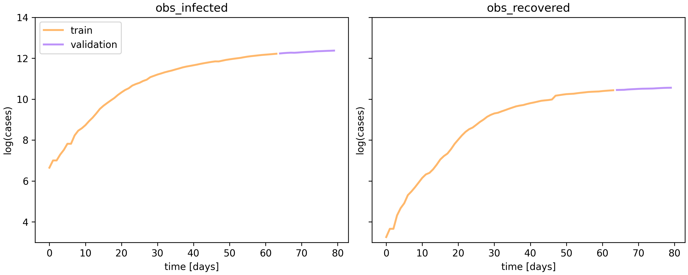
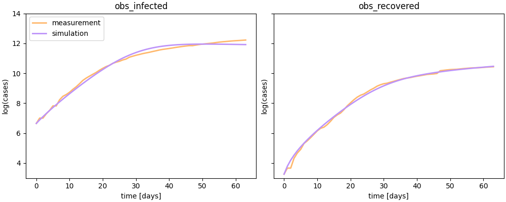
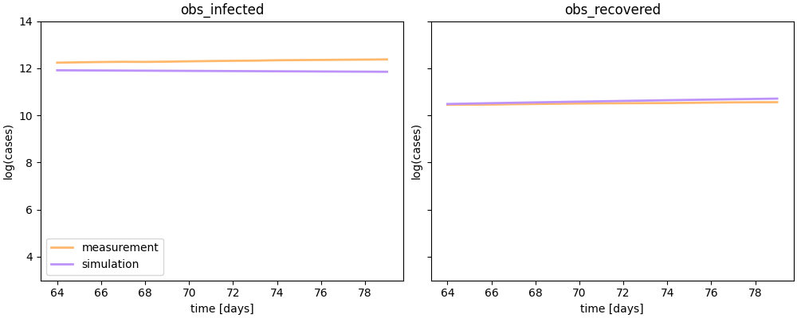

PEtab SciML
A format specification for solving parameter estimation problems using scientific machine learning
Branwen Snelling — RSECon 2026
Parameter estimation in computational biology
Many biological processes are modelled by systems of mechanistic ordinary differential equations (ODEs).
For example predator-prey dynamics, epidemic spread, and cell signalling.
The estimation problem
These models contain parameters — reaction rates, binding affinities, degradation constants — that are unknown and often unmeasurable.
We can estimate these unknown parameters by fitting the model to experimental data.
The PEtab format
PEtab is a tabular data format for specifying parameter estimation problems, widely used in computational biology.
A problem is defined by a set of .tsv and .yaml files, making it shareable and reproducible.

The PEtab problem: a model plus tables for conditions, observables, measurements and parameters. Source: petab.readthedocs.io
The missing link
Purely mechanistic models rely on us knowing the governing equations, however:
- Some dynamics are hard to describe from first principles
- Models can have missing terms or interactions
- Models can contain incorrect assumptions, e.g. standard kinetics do not apply
We want to control for these uncertainties but retain mechanistic insights
Scientific machine learning
SciML augments mechanistic ODE models with machine learning components.
The ODE captures the known physics/biology and neural networks learn the unknown dynamics.
But we need a standard way to specify these hybrid problems, which lead us to PEtab SciML.
PEtab SciML
An extension to PEtab for building and training scientific machine learning problems.

PEtab SciML extends the PEtab problem with neural network definitions and hybridization tables. Source: petab-sciml.readthedocs.io
Why a format specification?
- Reproducibility, a problem is fully defined by a standard set of files, not bespoke code.
- Multi-language support, a specified problem can be imported into multiple ecosystems i.e. AMICI (Python) or PEtab.jl (Julia).
- Transferable ML models, the YAML format defines the neural networks and is ecosystem agnostic.
Flexible hybridization

- Pre-initialization — map high-dimensional inputs (e.g. images) to model parameters
- Simulation — learn dynamic terms within the ODE, or replace the whole right-hand side (a Neural ODE)
- Observable mapping — learn the formula that links model outputs to real observations
Source: petab-sciml.readthedocs.io
Example: an epidemiology case study
A classic SIR model splits a population into Susceptible, Infected and Recovered compartments. This formulation also includes a quarantined compartment $T$ to capture interventions.
$S$ susceptible, $I$ infected, $R$ recovered, $T$ quarantined; $N$ total population. $\beta$ is the infection rate, $\gamma$ the recovery rate, $Q$ the quarantine strength, and $\delta$ the rate quarantined individuals recover.
The data

Observed infected and recovered counts, split into training and validation. Data: Dandekar et al., Patterns 2020
The problem
The quarantine strength $Q$ changes the dynamics in a way that is hard to write down mechanistically because it varies over time and by policy.
So we incorporate a neural network into the simulation to learn $Q$ from the data. This is an example of a Universal Differential Equation (UDE).
$\beta$ (infection rate) and $\gamma$ (recovery rate) are mechanistic parameters; and the outputs from $\mathbf{NN}_1$ represent $Q$, the quarantine strength. All are trained together against the data.
Implementing this in PEtab SciML
The hybrid problem is described by a handful of files:
- the SBML model defines the ODEs
- the hybridization table defines how the network plugs into the model
- the network YAML encodes the network architecture
- the array files provide initial parameters and input data
1. The mechanistic model
model sir_quarantine
# compartment and species (amounts in persons)
compartment population = 1;
species S in population, I in population, R in population, T in population;
# total population
N := S + I + R + T;
# mechanistic parameters (units per day)
const beta, gamma_, delta, quarantine_rate;
# reactions
infection: S -> I; beta * S * I / N;
recovery: I -> R; gamma_ * I;
quarantine: I -> T; quarantine_rate * I;
release: T -> R; delta * T;
end
Written in Antimony, a human-readable modelling language that exports directly to SBML — the model format PEtab expects.
2. The hybridization table
Defines how network inputs and outputs feed in to the model.
targetId targetValue
net1_input1 S/N
net1_input2 I/N
net1_input3 R/N
quarantine_rate net1_output1
Read it as assignment: targetId ← targetValue.
3. The network architecture
input
3
S/N, I/N, R/N
Linear
3 → 10
SiLU
activation
Linear
10 → 1
output
1
quarantine rate
- A YAML file per network, declaring layers (type + arguments) and a forward graph
- It is ecosystem agnostic, meaning the same file can be used to construct a PyTorch module in Python or a Lux network in Julia
4. The array files
Anything genuinely array-shaped lives outside the tables, in HDF5.
Parameter arrays
- Set the initial weights and biases per layer
- Also how a trained network is stored and shared
Input arrays
- For high dimensional inputs e.g. images, proteomics
- Not used in this example as inputs come from the ODE state
Together with the standard PEtab tables (conditions, observables, measurements, parameters, mappings), these files fully define the training problem.
Training the model
- Import the PEtab SciML problem (AMICI in Python, PEtab.jl in Julia)
- Define a loss function e.g. the negative log-likelihood of the data given the parameters
- Implement a training loop which jointly trains the network and mechanistic parameters
The importers generate differentiable model code, which makes training possible.
1. Import the problem
from petab import v2
from amici.importers.petab import PetabImporter
# Read the PEtab problem from files
petab_problem = v2.Problem.from_yaml("problem.yaml")
# Import the problem into AMICI
pi = PetabImporter(petab_problem=petab_problem, compile_=True, jax=True)
# Generate differentiable model code and wrap it in a simulator object
jax_problem = pi.create_simulator(force_import=True)
2. Define the loss
def loss_fn(problem):
llh, aux = run_simulations(problem)
return -llh, aux
loss_and_grad = eqx.filter_value_and_grad(loss_fn, has_aux=True)
3. Training loop
optimizer = optax.adam(3e-3)
opt_state = optimizer.init(eqx.filter(jax_train, eqx.is_inexact_array))
@eqx.filter_jit
def train_step(problem, opt_state):
(nllh, _), grads = loss_and_grad(problem)
updates, opt_state = optimizer.update(grads, opt_state)
problem = eqx.apply_updates(problem, updates)
return nllh, problem, opt_state
Training window

Trained UDE against the data on the training window. Trained with AMICI.
Validation window

Trained UDE against the data on the validation window. Trained with AMICI.
Summary
- PEtab SciML is a language-agnostic format for specifying and training hybrid models
- It facilitates solving parameter estimation problems, which are central to computational biology and other fields
- The format supports flexible hybridization, multiple languages, and a transferable ML model format improving reproducibility
References
- PEtab SciML — the format specification
- PEtab — the base tabular format
- AMICI — Python simulation & training
- PEtab.jl — Julia simulation & training
Acknowledgements
The Fröhlich Lab
The Francis Crick Institute
- Fabian Fröhlich
- Yoana Arroyo Berdugo
- Tamara Hodgetts
- Sebastian Persson
- Theo de Pomereu
- Marta Sadlej
- Asami Yasumoto-Rouhiainen
- Jana Zah
The Hasenauer Lab
University of Bonn
- Dilan Pathirana
- Maren Philipps
- Daniel Weindl